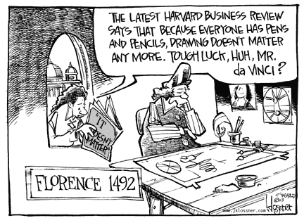

| In a provocative article (May 2003 issue of the Harvard Business Review) the HBR Editor,
Nicholas Carr pronounces information technology as strategically
irrelevant. Consequently he recommends the adoption of the following
policies:
|
 For additional tech toons visit jklossner.com |
Assertion #1. IT has lost its strategic valueIT is not strategic any more because it ceased to be a scarce good. Consequently profit margins related to IT-related innovations must disappear.Over half of Carr's article is devoted to an elaboration of this proposition. This argument is not supported by research findings (except for reference to my own research and a misunderstood citation from the Alinean Corporation). Carr bases his conclusions entirely on reasoning, by analogy, that IT must follow the patterns in the adoption of steam engines, railroads, telephones, electric generators and internal combustion motors. In rigorous arguments any proof of a proposition that rests entirely on analogies is flawed. This technique was used to uphold medieval dogma and has delayed the advancement of science by centuries. Carr's logic is defective because his examples deal exclusively with capital-intensive goods. Indeed, capital investments in machinery exhibit diminishing returns as market saturate and the difference between marginal costs and marginal revenues disappear. It happens that information goods are NOT subject to such diminishing returns. The marginal cost of information goods - especially of software that now takes the dominant share of information technology costs - does not rise with increased scale. It drops asymptotically to near zero. Therefore, any firm that can deploy information technologies with the prospect of realizing steadily lowering marginal costs can make information technology investments enormously profitable and in this way generate a rising strategic value.
Assertion #2: IT is a commodity that does not offer a competitive distinction and therefore not a competitive advantageIt is true that Microsoft Desktops running on Intel processors have rapidly evolved into widespread use. The desktops account for less than 12% of IT budgets and that number is declining. The remaining information technology costs are diverse and certainly do not represent commodity-like character. Does the tendency to standardize desktops prove that business processes that take advantage of these devices are doomed to uniformity without distinction?Carr neglects to consider that competitive advantage is always gained by organizations managed effectively by skilled and highly motivated people and not by personal computers. Since 1982 I have shown (in numerous publications) that firms using identical information technologies and spending comparable amounts of money on IT nevertheless show an enormous variability in profitability. My research, now confirmed by other researchers, has demonstrated that profitability and IT spending is unrelated, even if identical technologies are used. Therefore, the assumption that partial standardization of the IT environment would wipe out opportunities for gaining competitive advantage is not supported by evidence.
Assertion #3: IT is an infrastructural technology easily acquired and copied by anyone. Thus it cannot offer a competitive advantageEasy availability of information technology makes it increasingly valuable. E-mail, fax and cell phones gain in utility as they become more widely used because they can be acquired on attractive terms. I have spent 40 years of my career implementing information technologies. For the first 30 years that was a great pain. The technology was expensive, faulty, insecure, hard to manage and unstable. I finally see the advent of an era where low cost ownership of information technologies has finally arrived. This will be accomplished through services wherein the vendors assume most of the risks of failure while increasing ease of use by billions of people.Carr's advice to back off from information technologies just as they emerge from a long gestation period is mistimed and abortive. Information technology must be easily acquired and made available to everyone so that the global community can increase that standard of living through easier communications and lower costs of business transactions. Widespread availability creates new business opportunities, not stagnation.
Assertion #4: The influence of IT will henceforth be macroeconomic, and not a means for competitive differentiationThe proposition that IT benefits will henceforth flow to consumers and not to firms is a contradiction. Sustainable profits materialize when benefits accrue to customers. There are as yet enormous untapped gains in value to be delivered in health, education, entertainment, business services and especially in government. Extending the benefits of the global division of labor and the inclusion of billions of new consumers into the global marketplace will generate trillions of new revenues. For the global marketplace to function effectively will require enormous new IT investments by individual firms. Surely, there will be millions of enterprises that will be able to take advantage of such opportunities. The lower entry costs for taking advantage of the power of information technologies will make that feasible. In this regard Carr completely disregards the explosive growth of small businesses that have been made possible by the Internet. Information technology is a killer of bureaucracies and a reducer of overhead expenses, thus increasing its microeconomic viability. Asserting that benefits will accrue only to the economy at large and not to individual firms is a prescription for opting out of the information-based races in the years to come.
Assertion #5: IT is primarily a transport technology open to everyone and offering no advantageThis proposition is a misunderstanding of what IT is all about. Message transport functions performed by IT are NOT the primary reason why organizations deploy IT. The economic core of IT from which much of the value-added is derived resides in the management of information intelligence improved collaboration among individuals, groups and organizations. The transportation functions of IT are essential, but only of tertiary importance as a conduit. The value is in the message itself, not in the means of conveyance!Information technologies now provide the primary means for extending the value of a firm's "Knowledge Capital". Information technologies manage our rapidly exploding accumulation of scientific, research, customer, engineering, property and intellectual assets. Computers are the repositories of intelligence about customers, suppliers and products, which constitutes the most valuable knowledge assets of any firm that realize profit returns greater than their costs of financial capital. It is particularly noteworthy that information technology has now become recognized as the means for waging information warfare - a term that I apply not only to the military but also to commercial confrontations. I have shown in published articles how and why "Knowledge Capital" of firms is now worth more than the assets reported on conventional financial statements. I have shown how people become enormously empowered when augmented by information technologies because these tools magnify an individual's capability to perform complex tasks. By trivializing information technologies as electronic messengers Carr would deprive organizations from understanding how to deploy IT where it really matters, namely to be the weapon of choice in competitive contests.
Assertion #6: IT functions will be homogenized, thereby dooming proprietary applicationsCarr used the proliferation of off-the shelf standard applications (such as Microsoft Office) to predict the inexorable march towards homogeneity of information practices. Without diversity he does not expect competitive gains to be realized by anyone.The use of a standard software package does not doom an organization to homogeneity that destroys value. I suspect that Mr. Carr used the identical software to write his essay as I did in authoring this critique, yet we have arrived at opposite conclusions! I find in the rising demand in the standardization of communication protocols, web services, database languages and applications as value-enhancing developments, not as value detractors. I am particularly in favor of "open systems" that will make systems integration - now an enormous resource-sapping burden - easy and financially attractive. Standards remove from the agenda of IT executives the need to concern themselves with unceasing difficulties in assuring the interoperability of routine business processes. Homogenization through standards is desirable. IT staff can finally concentrate on what is indeed value enhancing for the enterprise, such as applications that reflect the distinctive characteristics of a firm while easily sharing information with customers and suppliers. Widely accepted information processing standards are now necessary to enable connectivity with customers and suppliers on a global scale. Applications that were completely custom-designed in the past and now praised by Carr were in fact inhibitors to extending the economic contributions of IT.
Assertion #7. Corporations will adopt generic applications, thus make business processes uniform and without competitive advantageThis assertion can be contradicted by anyone who has had experience with installation of one-code-fits-all "enterprise" software suites that have claimed delivery of generic answers to most business systems problems. Even the most tightly controlled generic application suite anywhere (SAP) can be observed as delivering completely different results for look- alike firms.Generic applications can be useful in reducing the total cost of ownership of computer systems in cases where business processes are sufficiently routine to benefit from the adoption of such solutions. Generic applications have been also known to destroy firms whenever an attempt is made to wedge a firm's unique processes into a generic mold. Carr's prediction that generic applications will take over is not supported by the rising reluctance of firms to install comprehensive enterprise solutions. In fact, the opposite is now true. By insisting on data and protocol interoperability firms are seeking greater freedom to combine applications from a growing diversity of software offerings.
Assertion #8. Existing IT capabilities are largely sufficient for corporate needsThe hubris that the pinnacle of what is ultimately achievable has been already attained is a theme that we can also study as a history of failures. The Chinese burned their fleet when they thought that nothing further could be gained from overseas trade. The Soviet Union retained their bankrupt central planning system because they considered it as the perfect way of how to manage an economy.Corporations are now confronting increased uncertainty about markets, competition, resources, legislative impacts and employee attitudes. The corporate environment has become more unpredictable. There is less time available for taking corrective measures. The corporate environment now calls for more complex coordination, with much of a margin for error. This all signifies the need for the deployment of more and better information technologies, not less. Carr's view that time has come to arrest further IT developments and to take a static posture is a prescription for passive inaction as challenges keep rising.
Assertion #9. Widespread adoption of "best practices" software makes IT-based advantages disappear for everyoneIndeed, the dissemination of information about best business practices is gaining, thanks to improved education and training, an excellent press and ubiquitous consultants who are always ready to get compensated for giving the identical advice. All this means that competitors are getting smarter and faster. Imitation and theft of "knowledge capital" now occupies a growing number of corporate staffers.Volatility increases obsolescence. Such conditions call for more rapid deployment of information technologies, more IT investments, not less. To survive in a race where everyone is swifter and more capable calls for speed, innovation and greater adoption of information technologies. I follow closely how defense budgets and the attention of military strategists is shifting from industrial age weapons to information technology supported weapons. Information superiority is now a requirement not only for defense and homeland security but also as a prerequisite for corporate survival. Carr's view that since everybody has access to the identical means for engaging in contests means that there cannot be any sustainable wins disregard the dynamics of intense competition. The widespread knowledge how to design ever faster sailing boats has not discouraged sailing races. They just make it harder to win while jacking up the amounts of money it takes just to show up at the starting line. Whenever a new information-based "best practice" appears it is usually seen by the more aggressive leaders as a signal to commence yet another round of more expensive competition with more, not less, IT.
Assertion #10. IT technology is reaching the end of its growth cycle and reaching saturationThere is not a shred of evidence that after 50 years of cyclical growth that information technology has reached a plateau similar to patterns shown by innovations in industrial age machinery.The limits on growth in the machine age have been imposed by material restrictions. There are limits on the size and performance of locomotives, turbines, airplanes, refrigerators or trucks as imposed by the mechanics of physical objects. Developments in information technologies are not as yet confined, so far as we can tell. The current cyclical correction to the excesses of the past decade are a crucible for generating more and better innovation, not stagnation. Technological progress has been always paced by the ability to aggregate separate innovations into a new bundle of capabilities. Machinery can achieve such integration only within a restricted physical space. The combinatorial aggregation of improvement through information technologies is infinite because software can endow computing devices with unrestricted variability in features and functions. The capabilities of a software enriched global networks has no boundaries. Carr's proposition that we have now reached the limit on the growth of IT is questionable because it does no recognize some of the fundamentals how IT differs from industrial age devices.
Assertion #11: IT risks now exceed advantages, requiring shifts in executive attention.The need to pay more attention to IT risks is indisputable. I share with Carr the concerns about information security, network reliability and systems corruption. However, I cannot endorse the thesis that risks now exceed IT advantages. Carr's advises executives to adopt a posture of reclusive withdrawal from search for new opportunities. He recommends pursuing cost reductions through cutting off IT instead of exploring what new opportunities are becoming available in a steady stream of new ideas.I favor cost cutting, especially if it applies to any bloated computing capacity that has been acquired in the last decade in a frenzy of hype without a semblance of an enterprise architecture and an alignment with a strategic plan. Cutting off innovative investments is not the way to restore security, reliability and systems integrity. Instead of feeding the increasingly costly IT infrastructure and throwing money at rising software maintenance costs, companies should be ready to engaged in yet another IT investment cycle to replace old systems. The cure for most of the so called "legacy" system is not patching, but radical innovation, such as shifting the accountability for systems performance to vendors who will now have to face up to the responsibility of delivering reliable and robust applications. I have examined such options. An examination of a large collection of applications shows that the financially most attractive way of dealing with the existing risks is to replace the systems and not to conserve what has life-cycle costs that vastly exceed replacement costs.
Summary:Carr's assertions and recommendations deserve to be challenged. If accepted they could inhibit the most innovative and value-creation means now available for increasing the economic benefits to enterprises as well as to customers. Carr's recommendations would damage, not help. A rear view mirror is not the best way how to examine the road ahead.Go back up to Strassmann, Inc. |